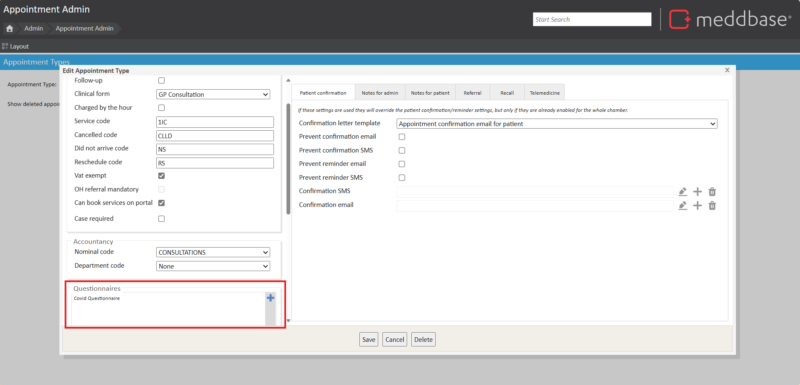
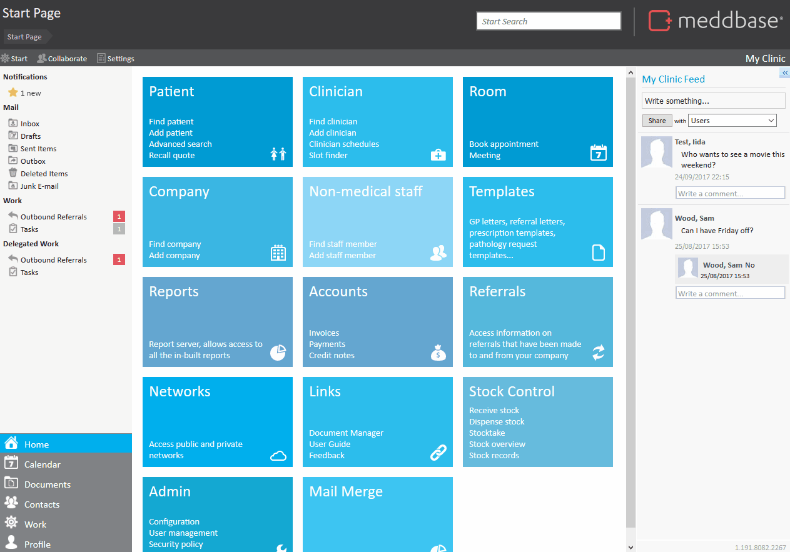

The Pre-Appointment Questionnaires feature allows patients to complete questionnaires online before their scheduled appointment. This feature is part of the online patient portal and helps streamline the appointment process by ensuring that necessary information is collected in advance. The article explains how users can associate specific questionnaires with appointment types, allowing patients to access and fill them out when they view their appointments online.
The purpose of this article is to guide users on how to attach pre-appointment questionnaires to appointment types in the system
To attach a questionnaire to an existing appointment type go to Start Page > Admin > Appointment Management > [Select Appointment Type] > Edit.

At the bottom of this window you will see an option for Questionnaires with a box next to it. Click the + symbol and select the questionnaire you wish to be available when this appointment is viewed online by the patient. Once all the questionnaires you wish to be associated with this appointment appear in the box, click Save.

*If you currently have no questionnaires and would like to create a new one, please see How to use the Questionnaire Builder for guidance on how to build your own.